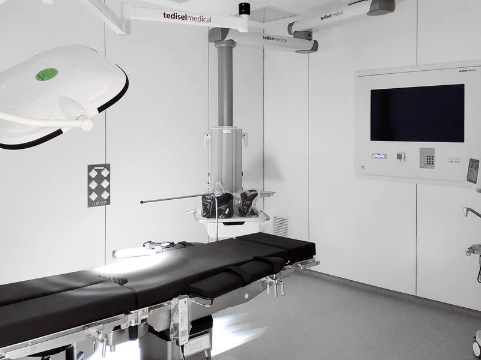

01Laser option
01Laser optionPiles (Haemorrhoids)
Bleeding, swelling or discomfort around the anus. Options range from diet and medicines to laser treatment for selected patients.
Learn MoreLaser piles care, laparoscopic and general surgery, each explained clearly with its own detailed page.
Seven areas of surgical care. Each has its own page covering symptoms, causes, treatment options and recovery.
01Laser optionBleeding, swelling or discomfort around the anus. Options range from diet and medicines to laser treatment for selected patients.
Learn More 02Laser option
02Laser optionA tear in the anal lining causing sharp pain with stools. Many heal with care; chronic cases may need a procedure.
Learn More 03Laser option
03Laser optionAn abnormal tunnel near the anus with repeated discharge or swelling. It rarely heals on its own and needs assessment.
Learn MoreA painful, sometimes discharging sinus near the tailbone. Treatment depends on infection and recurrence.
Learn More
05Laparoscopic optionA bulge in the groin or abdominal wall. Surgery is the definitive treatment, and laparoscopic repair suits some patients.
Learn More 06Laparoscopic option
06Laparoscopic optionAppendicitis causes abdominal pain that can worsen quickly. It needs prompt surgical evaluation.
Learn More 07Laparoscopic
07LaparoscopicGallstones can cause repeated upper-abdominal pain. Laparoscopic gallbladder surgery is the usual treatment for symptomatic stones.
Learn MoreMessage or call our clinic team and ask about a consultation with the surgeon. We are open daily, 10:00 AM – 9:00 PM.
If you notice any of these concerns, an early consultation with Dr. Shinde is the right first step.
+91 97668 15782Book a ConsultationTalk to our surgeon today. Honest advice, no pressure.